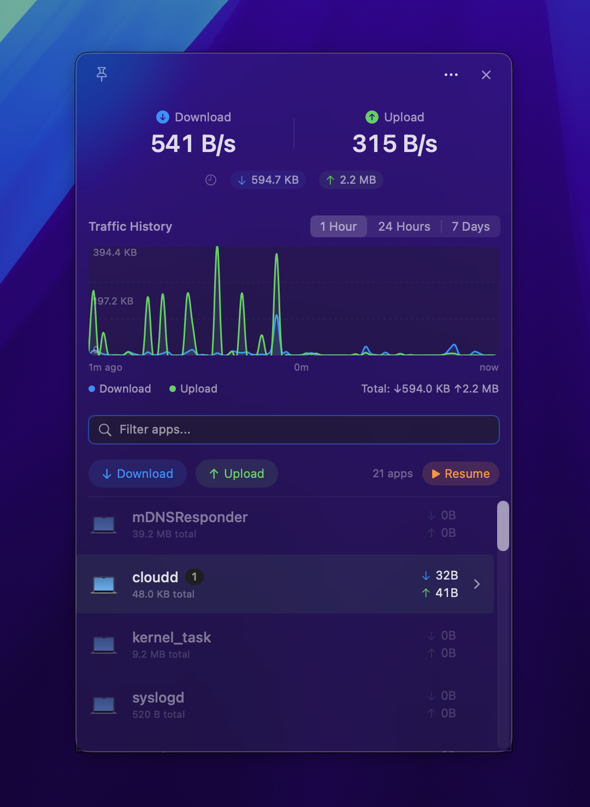
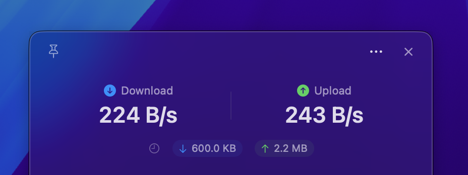
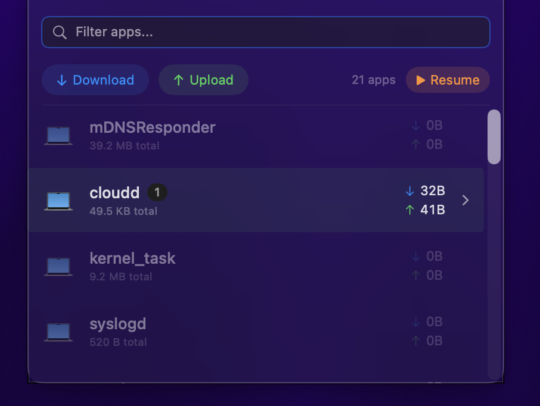
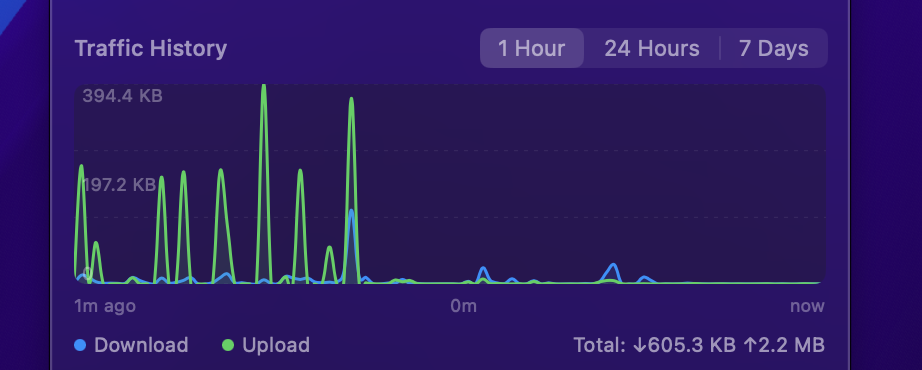
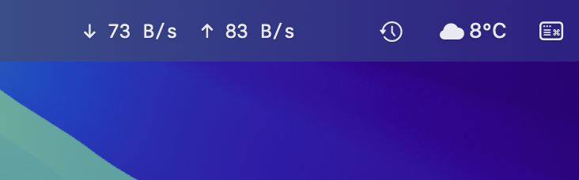

See what's talking on your Mac. Real-time traffic monitoring from your menu bar. Per-app breakdown, connection details, and history graphs.

Overview panel
Speed readout
App breakdown
Traffic history
Menu bar itemClone the repo and run swift build. One command to bundle the .app with ./deploy.sh.
Spook lives in your menu bar. Click to open the detail panel. Right-click for settings.
Watch per-app traffic in real-time. Expand any app to see connection details and DNS hostnames.
No elevated privileges required.
All data stays on your Mac in SQLite.
Zero analytics. Zero tracking.
No external dependencies.